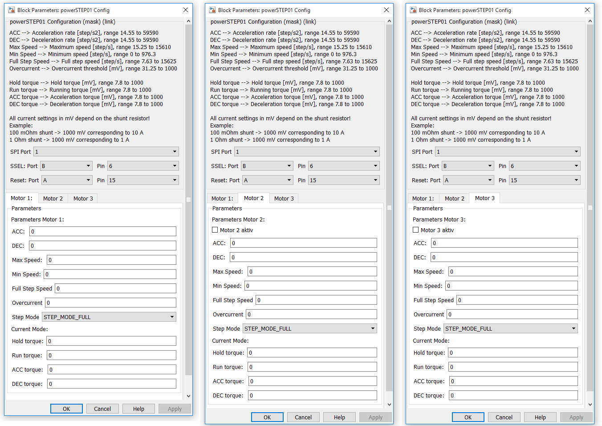
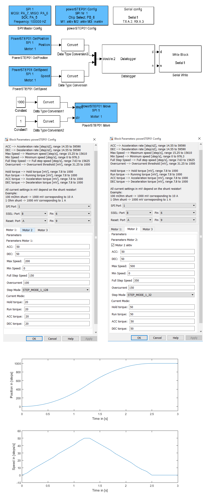

11.1.1. PowerSTEP01_Config
11.1.1.1. Description
This block configures up to three stepper motor drivers on a single SPI bus. The stepper motor driver IC powerSTEP01 and L6470 are supported. With this block you can make all the necessary settings for the motor driver. Each model that uses this block also needs an “SPI Master Config” block.
{kind=link}
11.1.1.2. Parameters and Dialog Box
SPI Port
specify the SPI port number that should be used by the block.
SSEL Port/Pin
specify the mcu pin which is connected to the chip select pin from the driver. This block supports the naming schema: ‘P’ + letter ‘A’, ‘B’, ‘C’, … + ‘_’ + number ‘0’, ‘1’, … ‘15’, e.g. PA_0.
Reset Port/Pin
specify the mcu pin which is connected to the reset pin from the driver. This block supports the naming schema: ‘P’ + letter ‘A’, ‘B’, ‘C’, … + ‘_’ + number ‘0’, ‘1’, … ‘15’, e.g. PA_0.
Motor 2/3 active
The checkbox “Motor 2 active” and “Motor 3 active” determine how many motors are connected to the SPI bus (Daisychain). “Motor 3 active” should only be activated if “Motor 2 active” is already been activated.
ACC
specifies the acceleration rate in [step/s^2]. The value for the acceleration rate must be in the range from 14.55 to 59590 step/s^2.
DEC
specifies the deceleration rate in [step/s^2]. The value for the deceleration rate must be in the range from 14.55 to 59590 step/s^2.
Max Speed
specifies the maximum speed in [step/s]. The value for the maximum speed must be in the range from 15.25 to 15610 step/s.
Min Speed
specifies the minimum speed in [step/s]. The value for the minimum speed must be in the range from 0 to 976.3 step/s.
Full Step Speed
specifies the full step speed in [step/s]. The value for the full step speed must be in the range from 7.63 to 15625 step/s.
Overcurrent
specifies the overcurrent threshold for the driver in [mV]. The value for the overcurrent threshold must be in the range from 31.25 to 1000 mV and in steps of 31.25 mV. The real current in the motor is calculated as follows:
I motor = U Overcurrent_threshold / R shunt
Step Mode
specifies the step mode of the driver (microstepping ). The possible values correspond to the values defined in the StepperMotor class:
| Step mode | Description |
|---|---|
| STEP_MODE_FULL | Full-step |
| STEP_MODE_HALF | Half-step |
| STEP_MODE_1_4 | 1/4 microstep |
| STEP_MODE_1_8 | 1/8 microstep |
| STEP_MODE_1_16 | 1/16 microstep |
| STEP_MODE_1_32 | 1/32 microstep |
| STEP_MODE_1_64 | 1/64 microstep |
| STEP_MODE_1_128 | 1/128 microstep |
Hold torque
specifies the hold torque in [mV]. The value for the hold torque must be in the range from 7.8 to 1000 mV. The real current in the motor is calculated as follows:
I motor = U Hold_torque_threshold / R shunt
Run torque
specifies the run torque in [mV]. The value for the run torque must be in the range from 7.8 to 1000 mV. The real current in the motor is calculated as follows:
I motor = U Run_torque_threshold / R shunt
ACC torque
specifies the acceleration torque in [mV]. The value for the acceleration torque must be in the range from 7.8 to 1000 mV. The real current in the motor is calculated as follows:
I motor = U ACC_torque_threshold / R shunt
DEC torque
specifies the deceleration torque in [mV]. The value for the deceleration torque must be in the range from 7.8 to 1000 mV. The real current in the motor is calculated as follows:
I motor = U DEC_torque_threshold / R shunt
11.1.1.3. Example
11.1.1.4. Code Generation
The variable, structure and instance names of mbed classes are based on <name> created by concatenating model name (, submodelnames) and block name (<Model Name>_(<Subblock Name>_…)<Block Name>). Space and minus characters are substituted by underscore (‘_’) characters.
Initialization Function
creates global structures for the motor parameters of each motor
creates a global instance from POWERSTEP01
POWERSTEP01 motor_NR_spi <SPI Port>P<SSEL Port Name>_<SSEL Pin Number>;
creates a global instance from DevSPI
DevSPI dev_spi_<name>(& <SPI Port>P<SSEL Port Name>_<SSEL Pin Number>);
and two lines in void <Model Name>_initialize(void) function
motor_NR_spi <SPI Port>P<SSEL Port Name>_<SSEL Pin Number>= new POWERSTEP01(P<RESET Port Name>_<RESET Pin Number>, P<SSEL Port Name>_<SSEL Pin Number>, dev_spi_<name>);
motor_NR_spi <SPI Port>P<SSEL Port Name>_<SSEL Pin Number>->Init( initDeviceParameters_<name>_motor_NR )
in <Model Name>.cpp.